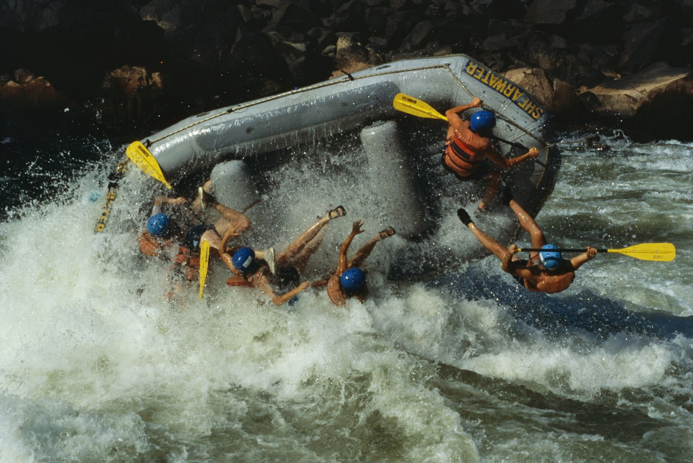
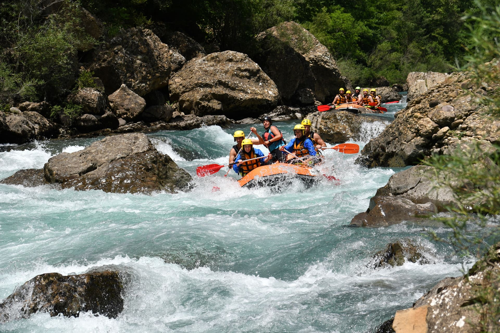
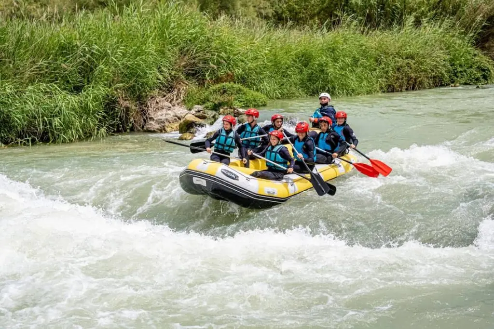

  
El descenso de ríos o balsismo, conocido mundialmente como rafting, es una actividad deportiva y recreativa que consiste en recorrer el río en la dirección de la corriente (río abajo), por lo general sobre algún tipo de embarcación o balsa. Por lo común los ríos que se navegan tienen algún grado de turbulencia, estos también son llamados ríos «de aguas blancas» debido a que este color es característico de la espuma que genera la turbulencia en los cuerpos de agua. Otra denominación común para este tipo de ríos es simplemente «rápidos».
En el descenso de ríos existe una clasificación internacional ampliamente aceptada para clasificar los ríos según su grado de dificultad al navegarlos.
Aguas planas. Se refiere a cuerpos de agua cuya superficie es prácticamente plana, sus remolinos, huecos y olas son despreciables.
Clase I. Muy fácil. Aguas casi planas, muy poco turbulentas con olas pequeñas. Totalmente navegable.
Clase II. Fácil. Aguas un poco turbulentas con huecos y hoyos de no más de 25 centímetros, remolinos pequeños sin peligro alguno para un nadador.
Los ríos de aguas turbulentas o ríos rápidos tienen características peculiares que todo buen practicante del descenso de ríos debe conocer. Los más conocidos son: eddy, hoyo feliz, hoyo triste, hoyo en "Vy" y hoyo en "Vy" invertida.
Por la naturaleza de la actividad se requiere un estricto apego a la técnica, al equipo y a la seguridad. El adecuado uso del equipo y el conocimiento de las técnicas básicas de remado y rescate es indispensable aun cuando se va con un guía experto o con una compañía de descenso de ríos.